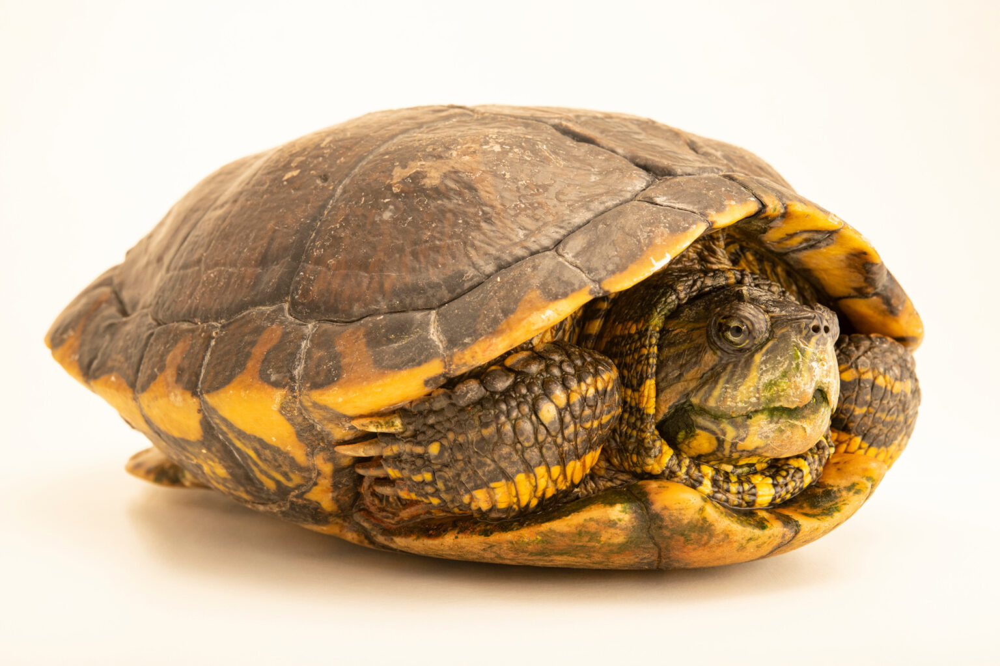

Tartaruga Tigre D'água
Trachemys dorbigni

Características
Tartaruga de água doce com carapaça achatada e padrão de listras amarelas e pretas. Pode atingir até 30 cm de comprimento.
Distribuição
Nativa do sul do Brasil, Uruguai e nordeste da Argentina, habitando rios, lagos e banhados.
Hábitos
Onívora, alimentando-se de plantas aquáticas, peixes pequenos e invertebrados. Passa grande parte do tempo tomando sol em pedras ou troncos.
Status de Conservação
Classificada como "Quase Ameaçada" devido à perda de habitat e captura para comércio ilegal de animais.

Escaneie para mais informações